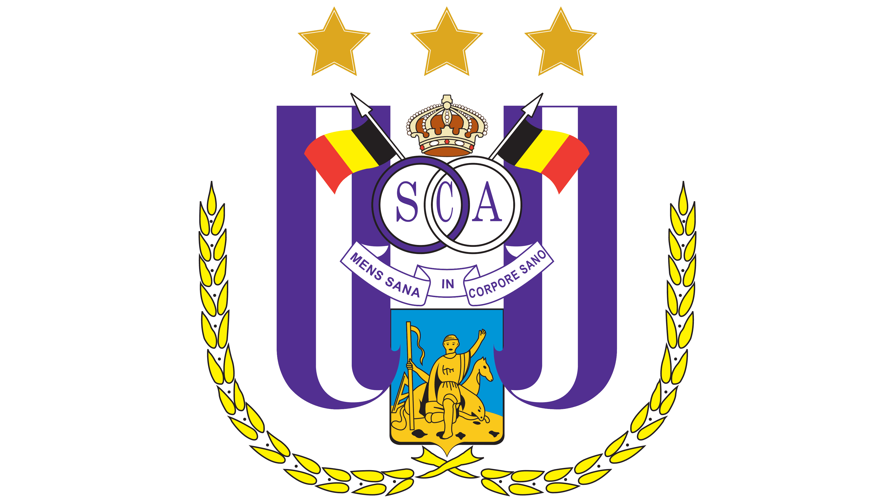
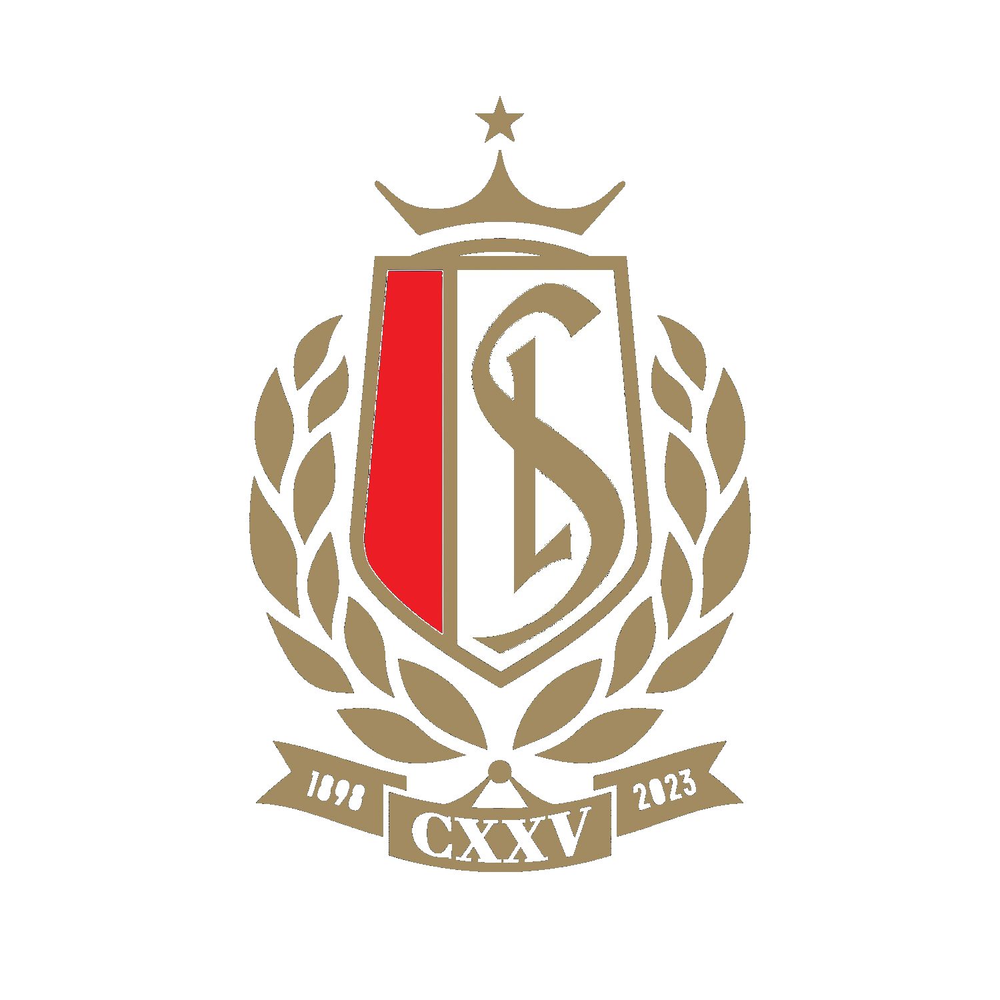
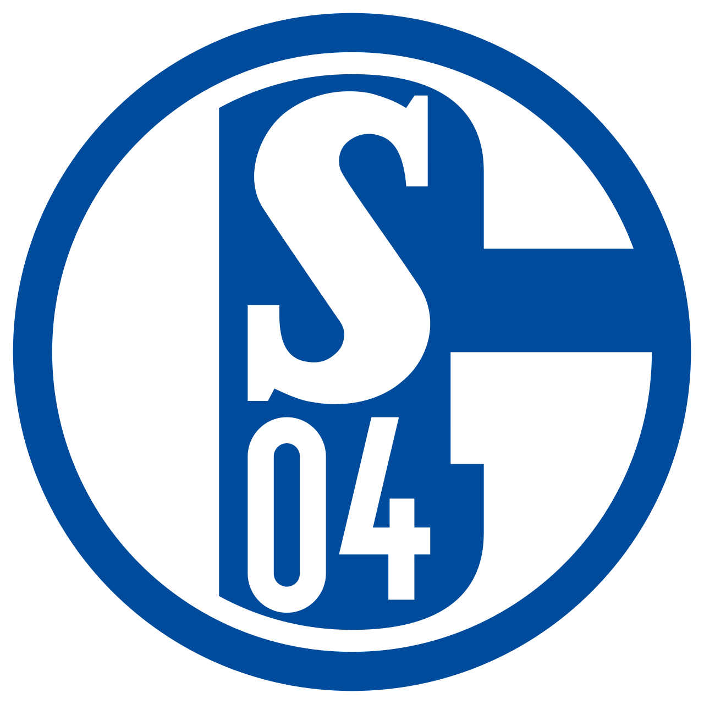
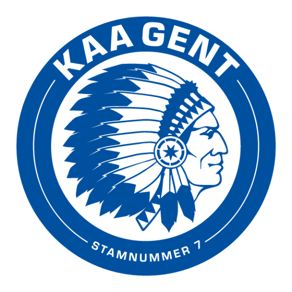
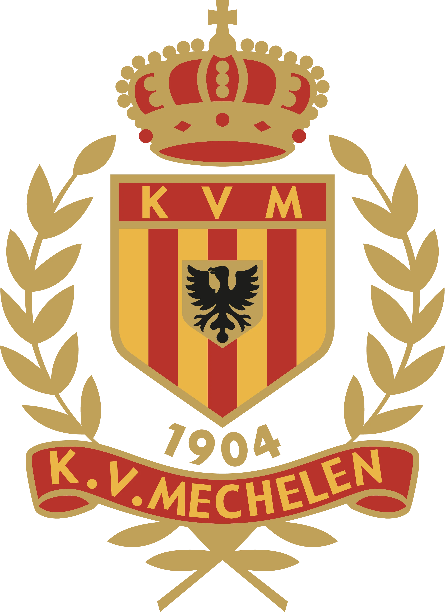

Drie tornooidagen vol topvoetbal in het Daknamstadion te Lokeren. Europese topclubs, een echte Champions-, Europa- & Conference League-structuur, en jong talent dat schittert op het grote veld.
De Benito Raman Cup brengt het beste jeugdvoetbal van U8 en U9 samen in een professioneel kader. Wedstrijden in 5v5 en 8v8, een doordachte competitiestructuur en een onvergetelijke dag voor spelers, ouders en supporters.
Elke ploeg speelt minimaal zes wedstrijden: drie in de poulefase en daarna de knockout-fases. Spelen verzekerd, geen vroege uitschakeling.
Champions, Europa én Conference League. Iedereen blijft strijden voor een trofee, ongeacht het verloop van de poulefase.
Een levendige sfeer met zo'n 500 bezoekers per tornooidag en aandacht van de pers.
Elke datum is een volledig tornooi op zich. De winnaar van een tornooidag schuift door als deelnemer naar de volgende editie — naar de finaledag op 29 mei, waar de toppers aantreden.
De aftrap. Opkomende ploegen openen het seizoen. De winnaar plaatst zich voor de volgende editie.
Het niveau stijgt. De winnaar van 1 mei sluit aan en strijdt mee om een ticket naar de finaledag.
De toppers. Europese topclubs en de doorgeschoven winnaars strijden om de Benito Raman Cup.
Vier ploegen per poule spelen drie wedstrijden. De top twee gaat naar de Champions League-kwartfinales, de onderste twee naar de Europa League. Verliezers stromen door naar de Conference League — zo blijft elke wedstrijd spannen.
Plaats 1 & 2 uit elke poule. De hoofdprijs: de Benito Raman Cup.
Plaats 3 & 4 uit elke poule strijden om de tweede trofee.
De verliezers van de kwartfinales krijgen een nieuwe kans op eremetaal.
Een selectie van de clubs die hun deelname al bevestigden. De lijst groeit — meld jouw ploeg aan en speel mee.

RSC Anderlecht
Standard Luik
Schalke 04
KAA Gent
KV MechelenDaknamstraat 91
9160 Lokeren, België
De thuishaven van Sporting Lokeren vormt het indrukwekkende decor voor de Benito Raman Cup — een echt stadion voor onze jongste talenten, met tribunes, catering en ruime parking.
Meld je ploeg aan voor de Benito Raman Cup. Na goedkeuring door het bestuur ontvang je alle praktische info.
Ploeg aanmelden